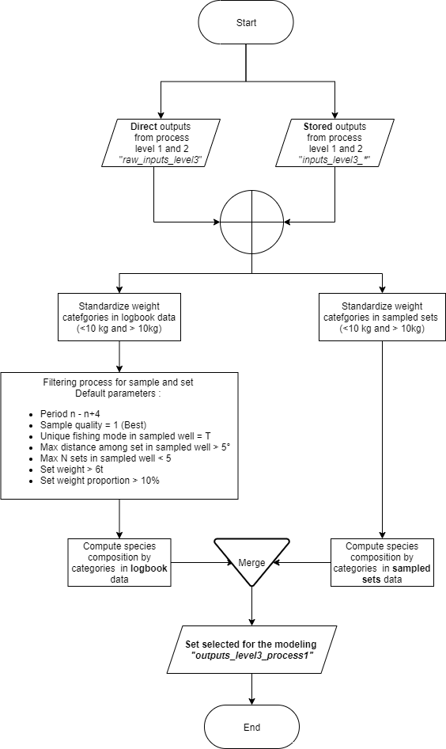
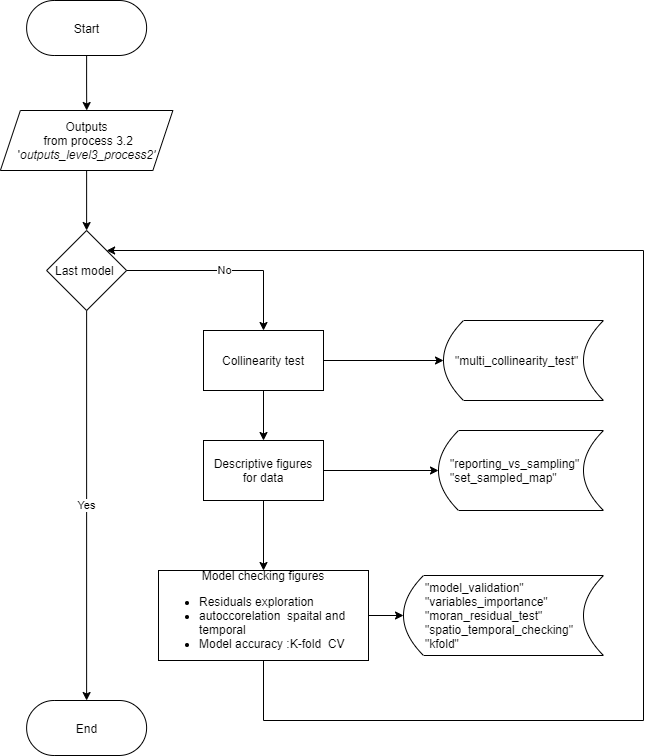
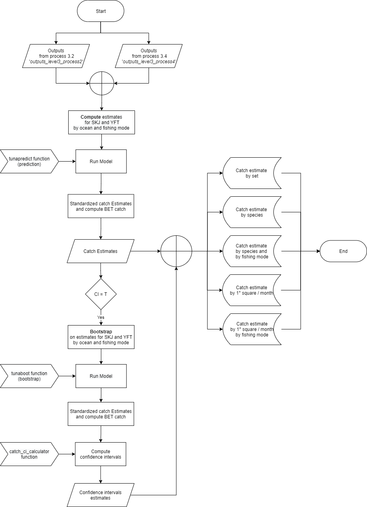

Modelling species proportion in catch and Computation of catch estimates
The level 3 process of the T3R package aim at modelling species composition before estimating catch for the major tuna species only: Yellowfin tuna, skipjack and bigeye tuna. The process is divided in 5 steps:
| Process | Name | Corresponding method |
|---|---|---|
| 3.1 | Data preparatory | data_preparatory() |
| 3.2 | Modelling | random_forest_models() |
| 3.3 | Data and model diagnostic | models_checking() |
| 3.4 | Dataset for prediction | data_formatting_for_predictions() |
| 3.5 | Catch prediction | model_predictions() |
Process 3.1: Data preparatory

Process 3.2: Modelling

Process 3.3: Data and Model checking

Process 3.4: Dataset for prediction

Process 3.5: Modelling speices composition and estimating catch
